RM estructural · T1
Anatomía
Resonador magnético
01 · Contexto
Una enfermedad neurodegenerativa y sin cura: el cerebro pierde neuronas y se encoge, de adentro hacia afuera.
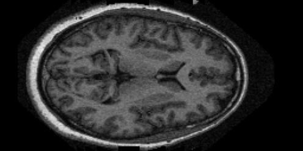
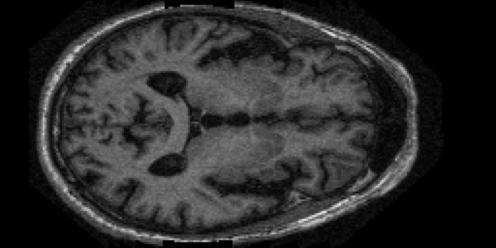
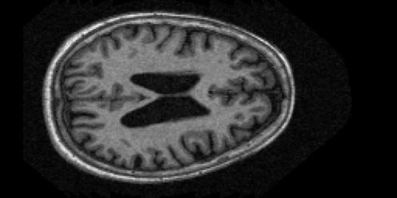
Esquema · Braak y Braak (1991) · RM reales de OASIS-1
02
RM estructural · T1
PET
RM funcional
02 · Neuroimágenes
03 · Estado del arte
Richhariya et al. (2020)
RM estructural · ADNI · CN vs AD
Parameswari et al. (2022)
RM · OASIS · CN vs AD
Elgammal et al. (2022)
RM · ADNI · CN / MCI / AD
Soundarya et al. (2021)
RM estructural · OASIS · CN vs AD
Helaly et al. (2022)
RM 3D · ADNI · CN vs AD
Hong et al. (2019)
RM · ADNI · MCI vs AD
Nibila y Sivagami (2026), Front. Artif. Intell. · Helaly et al.: valor del artículo original
03 · Estado del arte
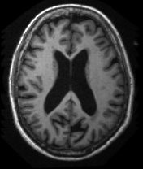
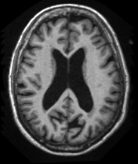
Tustison et al. (2010)
N4ITK: empareja el brillo del escáner
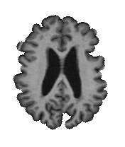
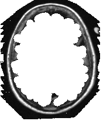
Smith (2002)
BET: deja solo el cerebro
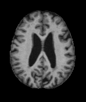
Fonov et al. (2011)
MNI152: todos en el mismo espacio
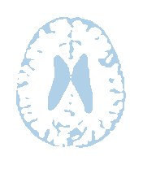
líquidoFischl (2012)
FreeSurfer: materia gris, blanca y líquido
Hon y Khan (2017)
quedarse con los cortes con más información
Shorten y Khoshgoftaar (2019)
rotar, voltear y escalar para tener más ejemplos
Imágenes reales de OASIS-1
04 · Redes convolucionales
Convolución
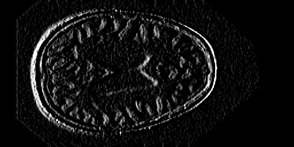
05 · Transformers
Hub de Emprendimiento
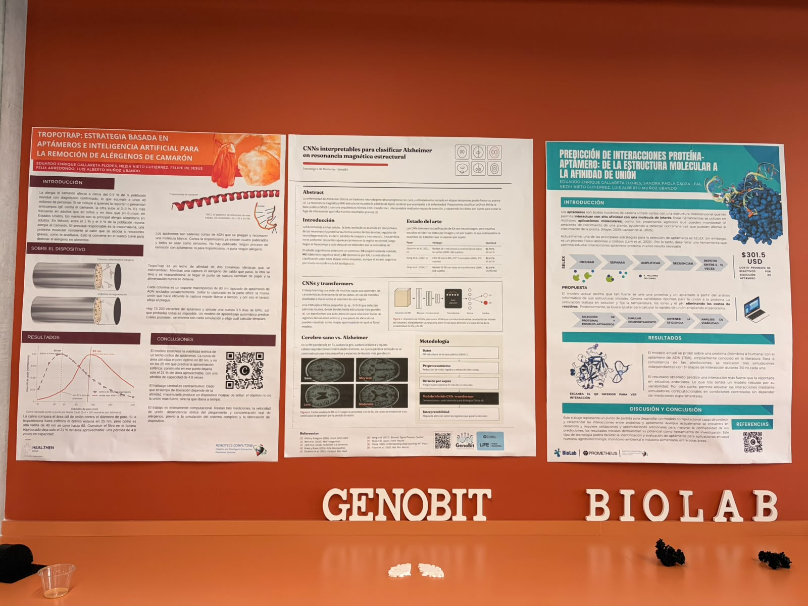
Nuestra propuesta